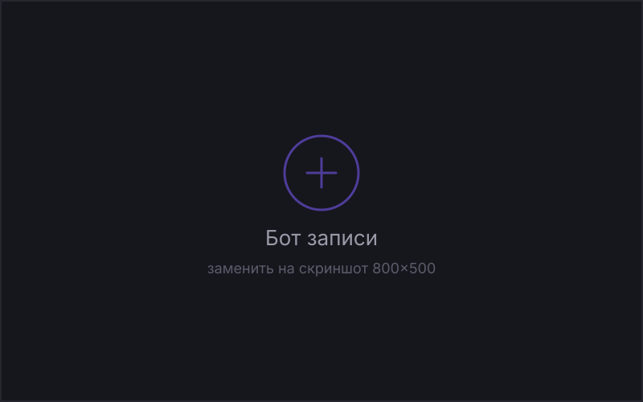

Студия маникюра, 3 филиала
Запись клиентов через Telegram-бота
Как администратор перестал вести запись в переписке и вернул себе два часа каждый вечер.

Задача
Запись велась в переписке во «ВКонтакте», в Telegram и по телефону, а сводилась в общую таблицу вручную. Раз в неделю случалась двойная бронь: два мастера на одно время, недовольный клиент и извинения. Вечерняя сверка занимала у администратора полтора-два часа.
Что сделал
- Разобрал процесс: выписал все точки, где появляется запись, и нашёл, что 70% обращений — это четыре типовых вопроса.
- Сделал бота: выбор филиала, мастера и свободного времени, перенос и отмена записи в два нажатия.
- Связал бота с общим календарём, чтобы занятые слоты исчезали сразу и у всех филиалов.
- Добавил напоминание за три часа до визита и кнопку «не смогу прийти» — слот освобождается автоматически.
- Собрал админ-раздел: список записей на день, выгрузка в таблицу, ручная блокировка времени.
Как это устроено
Бот работает на сервере клиента, данные лежат в PostgreSQL, расписание синхронизируется с Google Календарём раз в минуту. При ошибке синхронизации бот пишет в служебный чат, а не молчит.
Результат
- −70%ручной работы администратора
- −35%неявок после напоминаний
- 9 днейот старта до запуска
Ожидала долгого внедрения, а бот заработал через полторы недели. Вечерняя сверка просто исчезла из рабочего дня.
Нужно похожее?
Расскажите, что нужно, — отвечу с оценкой срока и вилкой цены. Консультация бесплатная.
Написать в Telegram